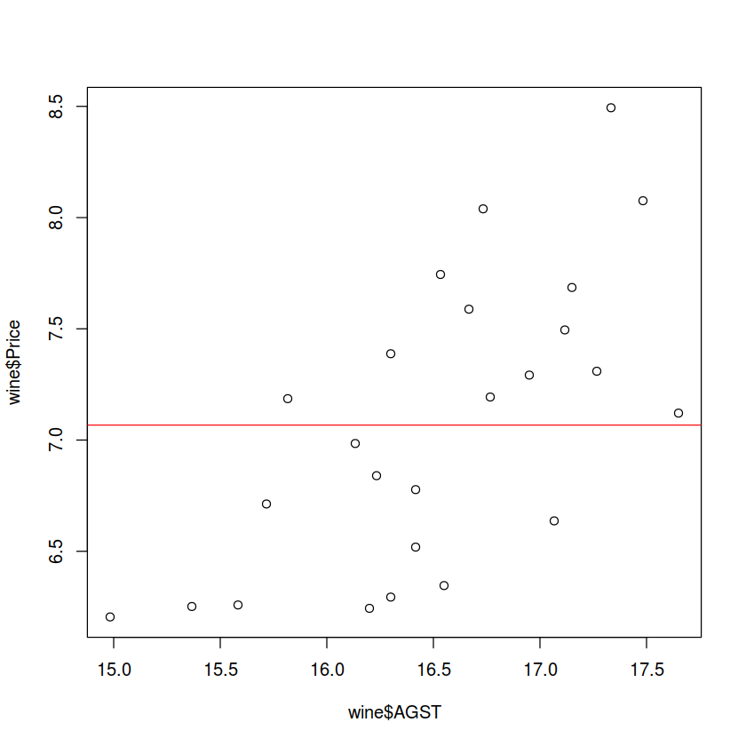
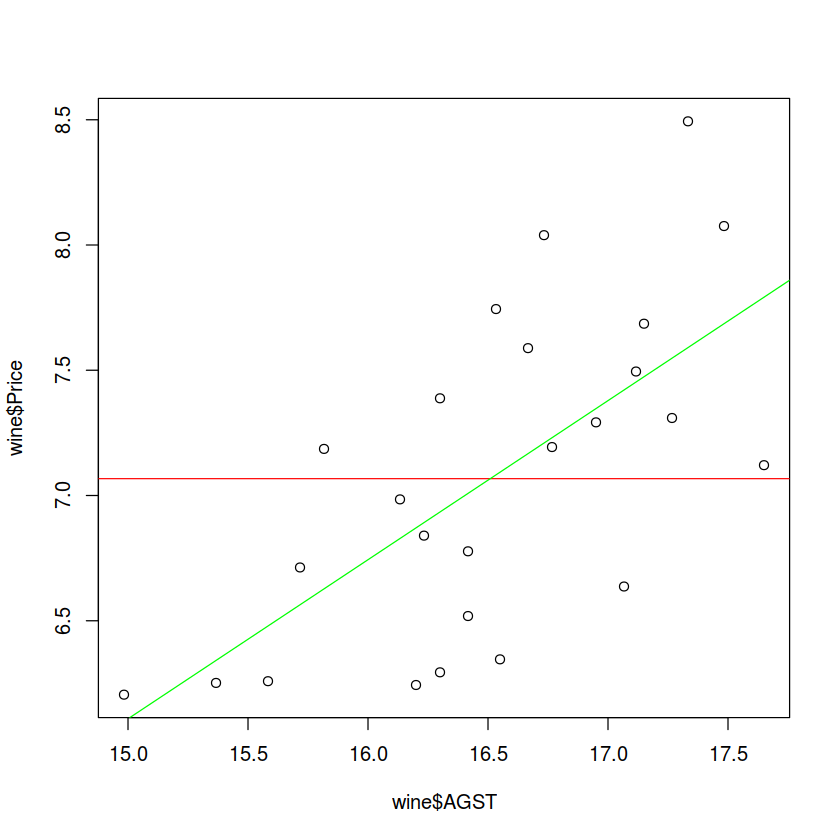
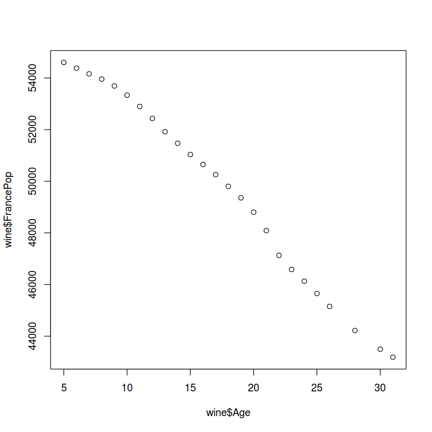

预测葡萄酒的质量
读取并初步探索数据¶
wine = read.csv("/home/jerrywang/GitHub/note_viajupyterbook/mynote/datas/Wine.csv")
str(wine)
'data.frame': 25 obs. of 7 variables:
$ Year : int 1952 1953 1955 1957 1958 1959 1960 1961 1962 1963 ...
$ Price : num 7.5 8.04 7.69 6.98 6.78 ...
$ WinterRain : int 600 690 502 420 582 485 763 830 697 608 ...
$ AGST : num 17.1 16.7 17.1 16.1 16.4 ...
$ HarvestRain: int 160 80 130 110 187 187 290 38 52 155 ...
$ Age : int 31 30 28 26 25 24 23 22 21 20 ...
$ FrancePop : num 43184 43495 44218 45152 45654 ...
summary(wine)
Year Price WinterRain AGST HarvestRain
Min. :1952 Min. :6.205 Min. :376.0 Min. :14.98 Min. : 38.0
1st Qu.:1960 1st Qu.:6.519 1st Qu.:536.0 1st Qu.:16.20 1st Qu.: 89.0
Median :1966 Median :7.121 Median :600.0 Median :16.53 Median :130.0
Mean :1966 Mean :7.067 Mean :605.3 Mean :16.51 Mean :148.6
3rd Qu.:1972 3rd Qu.:7.495 3rd Qu.:697.0 3rd Qu.:17.07 3rd Qu.:187.0
Max. :1978 Max. :8.494 Max. :830.0 Max. :17.65 Max. :292.0
Age FrancePop
Min. : 5.0 Min. :43184
1st Qu.:11.0 1st Qu.:46584
Median :17.0 Median :50255
Mean :17.2 Mean :49694
3rd Qu.:23.0 3rd Qu.:52894
Max. :31.0 Max. :54602
画图以直观地反映变量之间的关系
plot(wine$AGST, wine$Price)
abline(h = mean(wine$Price), col = "red")

建立线性模型¶
model1 = lm(Price ~ AGST, data = wine)
summary(model1)
Call:
lm(formula = Price ~ AGST, data = wine)
Residuals:
Min 1Q Median 3Q Max
-0.78450 -0.23882 -0.03727 0.38992 0.90318
Coefficients:
Estimate Std. Error t value Pr(>|t|)
(Intercept) -3.4178 2.4935 -1.371 0.183710
AGST 0.6351 0.1509 4.208 0.000335 ***
---
Signif. codes: 0 ‘***’ 0.001 ‘**’ 0.01 ‘*’ 0.05 ‘.’ 0.1 ‘ ’ 1
Residual standard error: 0.4993 on 23 degrees of freedom
Multiple R-squared: 0.435, Adjusted R-squared: 0.4105
F-statistic: 17.71 on 1 and 23 DF, p-value: 0.000335
plot(wine$AGST, wine$Price)
abline(h = mean(wine$Price), col = "red")
abline(model1, col = "green")

残差平方和¶
计算残差平方和
SSE1 = sum(model1$residuals^2)
SSE1
5.73487514702011
增加一个解释变量
model2 = lm(Price ~ AGST + HarvestRain, data = wine)
summary(model2)
Call:
lm(formula = Price ~ AGST + HarvestRain, data = wine)
Residuals:
Min 1Q Median 3Q Max
-0.88321 -0.19600 0.06178 0.15379 0.59722
Coefficients:
Estimate Std. Error t value Pr(>|t|)
(Intercept) -2.20265 1.85443 -1.188 0.247585
AGST 0.60262 0.11128 5.415 1.94e-05 ***
HarvestRain -0.00457 0.00101 -4.525 0.000167 ***
---
Signif. codes: 0 ‘***’ 0.001 ‘**’ 0.01 ‘*’ 0.05 ‘.’ 0.1 ‘ ’ 1
Residual standard error: 0.3674 on 22 degrees of freedom
Multiple R-squared: 0.7074, Adjusted R-squared: 0.6808
F-statistic: 26.59 on 2 and 22 DF, p-value: 1.347e-06
计算新模型的残差平方和
SSE2 = sum(model2$residuals^2)
SSE2
2.97037334017354
再次增加变量并计算残差平方和
model3 = lm(Price ~ AGST + HarvestRain + WinterRain + Age + FrancePop, data = wine)
summary(model3)
Call:
lm(formula = Price ~ AGST + HarvestRain + WinterRain + Age +
FrancePop, data = wine)
Residuals:
Min 1Q Median 3Q Max
-0.48179 -0.24662 -0.00726 0.22012 0.51987
Coefficients:
Estimate Std. Error t value Pr(>|t|)
(Intercept) -4.504e-01 1.019e+01 -0.044 0.965202
AGST 6.012e-01 1.030e-01 5.836 1.27e-05 ***
HarvestRain -3.958e-03 8.751e-04 -4.523 0.000233 ***
WinterRain 1.043e-03 5.310e-04 1.963 0.064416 .
Age 5.847e-04 7.900e-02 0.007 0.994172
FrancePop -4.953e-05 1.667e-04 -0.297 0.769578
---
Signif. codes: 0 ‘***’ 0.001 ‘**’ 0.01 ‘*’ 0.05 ‘.’ 0.1 ‘ ’ 1
Residual standard error: 0.3019 on 19 degrees of freedom
Multiple R-squared: 0.8294, Adjusted R-squared: 0.7845
F-statistic: 18.47 on 5 and 19 DF, p-value: 1.044e-06
SSE3 = sum(model3$residuals^2)
SSE3
1.73211271534381
改进模型¶
之前的模型中，年龄和法国人口都是微不足道的，我们怀疑存在多重共线性，因此我们先用cor()函数来计算数据中每个变量之间的相关系数
cor(wine)
| Year | Price | WinterRain | AGST | HarvestRain | Age | FrancePop | |
|---|---|---|---|---|---|---|---|
| Year | 1.00000000 | -0.4477679 | 0.016970024 | -0.24691585 | 0.02800907 | -1.00000000 | 0.994485097 |
| Price | -0.44776786 | 1.0000000 | 0.136650547 | 0.65956286 | -0.56332190 | 0.44776786 | -0.466861641 |
| WinterRain | 0.01697002 | 0.1366505 | 1.000000000 | -0.32109061 | -0.27544085 | -0.01697002 | -0.001621627 |
| AGST | -0.24691585 | 0.6595629 | -0.321090611 | 1.00000000 | -0.06449593 | 0.24691585 | -0.259162274 |
| HarvestRain | 0.02800907 | -0.5633219 | -0.275440854 | -0.06449593 | 1.00000000 | -0.02800907 | 0.041264394 |
| Age | -1.00000000 | 0.4477679 | -0.016970024 | 0.24691585 | -0.02800907 | 1.00000000 | -0.994485097 |
| FrancePop | 0.99448510 | -0.4668616 | -0.001621627 | -0.25916227 | 0.04126439 | -0.99448510 | 1.000000000 |
FrancePop和Age的相关系数接近-1，存在很明显的相关性，画图以直观地表现这一结果
plot(wine$Age, wine$FrancePop)

在模型中减少一个变量，直观上我们觉得取消法国人口更加合适
model4 = lm(Price ~ AGST + HarvestRain + WinterRain + Age, data = wine)
summary(model4)
Call:
lm(formula = Price ~ AGST + HarvestRain + WinterRain + Age, data = wine)
Residuals:
Min 1Q Median 3Q Max
-0.45470 -0.24273 0.00752 0.19773 0.53637
Coefficients:
Estimate Std. Error t value Pr(>|t|)
(Intercept) -3.4299802 1.7658975 -1.942 0.066311 .
AGST 0.6072093 0.0987022 6.152 5.2e-06 ***
HarvestRain -0.0039715 0.0008538 -4.652 0.000154 ***
WinterRain 0.0010755 0.0005073 2.120 0.046694 *
Age 0.0239308 0.0080969 2.956 0.007819 **
---
Signif. codes: 0 ‘***’ 0.001 ‘**’ 0.01 ‘*’ 0.05 ‘.’ 0.1 ‘ ’ 1
Residual standard error: 0.295 on 20 degrees of freedom
Multiple R-squared: 0.8286, Adjusted R-squared: 0.7943
F-statistic: 24.17 on 4 and 20 DF, p-value: 2.036e-07
优化后的模型各个系数都很显著，这表明我们之前的模型是存在多重共线性，去掉一个变量后，很好的解决了这样的问题。
我们也可以选择去掉年龄那一个变量，回归结果不会有太大的差异，但是从解释角度来看就存在不同。一方面，使用年龄的模型对经理和客户更友好。另一方面我们有理由怀疑，人口与价格的关系是虚假的，人口和价格的关系是通过人口和年龄的关系传导的。
为了进一步的优化模型，我们可以选择删除一些变量，让我们尝试先来同时删除年龄和人口
model5 = lm(Price ~ AGST + HarvestRain + WinterRain, data = wine)
summary(model5)
Call:
lm(formula = Price ~ AGST + HarvestRain + WinterRain, data = wine)
Residuals:
Min 1Q Median 3Q Max
-0.67472 -0.12958 0.01973 0.20751 0.63846
Coefficients:
Estimate Std. Error t value Pr(>|t|)
(Intercept) -4.3016263 2.0366743 -2.112 0.046831 *
AGST 0.6810242 0.1117011 6.097 4.75e-06 ***
HarvestRain -0.0039481 0.0009987 -3.953 0.000726 ***
WinterRain 0.0011765 0.0005920 1.987 0.060097 .
---
Signif. codes: 0 ‘***’ 0.001 ‘**’ 0.01 ‘*’ 0.05 ‘.’ 0.1 ‘ ’ 1
Residual standard error: 0.345 on 21 degrees of freedom
Multiple R-squared: 0.7537, Adjusted R-squared: 0.7185
F-statistic: 21.42 on 3 and 21 DF, p-value: 1.359e-06
我们可以看到，r方有明显的下降，因此保留年龄这个变量是必要的。
测试模型¶
现在我们将使用我们训练好的模型来用测试集检验
wineTest = read.csv("/home/jerrywang/GitHub/note_viajupyterbook/jerrynote/datas/Wine_Test.csv")
str(wineTest)
'data.frame': 2 obs. of 7 variables:
$ Year : int 1979 1980
$ Price : num 6.95 6.5
$ WinterRain : int 717 578
$ AGST : num 16.2 16
$ HarvestRain: int 122 74
$ Age : int 4 3
$ FrancePop : num 54836 55110
我们可以调用predict()函数来进行检验
predictTest = predict(model4, newdata = wineTest)
predictTest
- 1
- 6.76892462968129
- 2
- 6.68491040269209
为了评估我们预测的准确性，我们可以计算样本外R平方。
SSE = sum((wineTest$Price - predictTest)^2)
SST = sum((wineTest$Price - mean(wine$Price))^2)
1 - SSE/SST
0.794427760263299